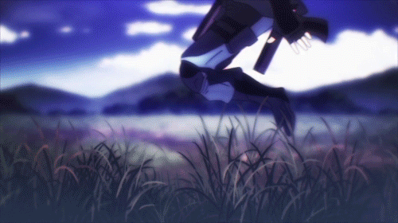

Physical Abilities
Physically, having trained with Yotsuba combat magicians since he was six years old and with Yakumo and the 101 Independent Magic-Equipped Battalion in his preteens & teens, it is said that Tatsuya is second to none and is evaluated to be at master class. Despite Tatsuya being best at long-ranged combat, he is almost unmatched in close combat as well, due to his physical abilities. His physical abilities are so great that even without the use of magic he can even match magicians using magic to enhance their physical abilities.
Ninjutsu
Tatsuya is a student of Kokonoe Yakumo, a famous ninjutsu user and someone who passes on traditional shinobi [2] magic know-how. Due to this, he can handle multiple opponents at once and emerge unscathed. Tatsuya's physical abilities surpass normal magicians, who usually just rely on magic to accelerate or fortify their bodies to prevent injuries. It is also thanks to his training that Tatsuya can sense dangerous and hidden presences without relying on his unique magic, Elemental Sight. Yakumo himself has said, "It’s possible that I’m unable to beat Tatsuya-kun in pure martial arts already..." thus proving his physical prowess. Before his present age Tatsuya had learned enough techniques to be considered a master or something close. Through his ninjutsu training, he is a master of chi utilization.
Magic Abilities
From a magical standpoint, while Tatsuya's casting speed for complex systematic spells is slow, among introduced characters, Tatsuya has the highest known psion count, giving him access to the rare Gram Demolition counter magic and high magical endurance. Tatsuya's intellect and understanding of magic on a theoretical level also allows him to use magic in ways that no one else does.
Innate Magic
Tatsuya is a Born-Specialized Magician (BS Magician) and is always emphasized as someone whose capability in wielding magic doesn't classify him as any more than a Rank C Magician, by international standards, since international standards require competence in various forms of magic.
Tatsuya can only freely wield two types of active magic, based on his innate ability of directly interfering with structural information: Decomposition and Regrowth. One is unknown to the world while the other magic is considered difficult and high-class. Owing to this circumstance, his natural Magic Calculation Area is dominated by these two powerful abilities, making him unable to wield other magic.
While Tatsuya's abilities are undoubtedly powerful, strictly speaking, at least according to the Yotsuba Family, they are not magic abilities, which involve the altering of Eidos instead of simply breaking down and restoring Eidos. His abilities are thus more akin to being superpowers. This is the main reason why the Yotsuba family treats him as an outcast or a fake Magician.
Still, the abilities that he has obtained at birth allows him to excel in combat and assassinations, and makes him a balanced fighter. Tatsuya's magical abilities and talents gives him the greatest advantage in long-range magic. It has been stated that Tatsuya excels in extreme long-distance precision attacks and OTH (over the horizon) sniping, and can easily snipe human targets from a range roughly distanced at 1200 meters. It is indirectly implied throughout the series, that his OTH (over the horizon) magical sniping gives him the greatest attack range in the magical community.
- Elemental Sight: Elemental Sight is a sensory ability that allows Tatsuya to connect to the Information Dimension. He can then specify the Eidos of their surroundings individually, regardless of distance. He can analyze the Eidos of targets. This allows him to use his two only active magic: Decomposition and Regrowth.
- Decomposition: It is also known as Dissolution, Disintegration and "Demon Right." With Elemental Sight, he can identify the design of any Eidos or Sequence, then using Decomposition, he can break down that design or structure. For information bodies, such as magic spells, he can directly disassemble the design (see Gram Dispersion). For physical objects, he can break them down into their constituent molecules (see Mist Dispersion), or even further into pure energy (see Material Burst). If used on a person, the parts that form the human body, including skin, flesh, nerves, body fluids, bones, and cellular structures would be decomposed at a molecular level. This is one of the most difficult magic imaginable, able to directly interfere with the design information. The activation speed of Decomposition is mentioned to be 0.05 seconds. Furthermore, with no retaliation, Tatsuya is capable of decomposing 36 targets simultaneously, but under constant fire his upper limit for mass targeting is 24.
- Regrowth: With Elemental Sight, Tatsuya can "read" the structural information of any object up to 24 hours in the past and with Regrowth, he can restore anything--organic or inorganic--to any point in that time frame. This means that he can restore fatally injured people, including himself, to a state before they were injured. Unlike Decomposition, Regrowth is entirely unique to Tatsuya. Regrowth emits no detectable psions and activates/finishes so quickly that "it is beyond the speed of human cognition." This skill is both passive (done automatically) and active (under conscious control). A requirement of the skill is that Tatsuya must "read" all the information about the target he is trying to restore. Unfortunately, when trying to heal people, this means that Tatsuya must "read" and then experience the recipient's pain in order to use Regrowth. The amount of pain that Tatsuya has to experience is a condensed form of how long and how much pain was experienced by the injured person, within the amount of time that he needs to read the Eidos Change-log. For example, Tatsuya healing Kei Isori during the Yokohama Disturbance VIII (anime), Isori had experienced the pain of the injury for 30 seconds before Tatsuya casted Regrowth. Tatsuya took 0.2 seconds reading the Eidos Change-log, hence in 0.2 seconds Tatsuya experienced 150 times the amount of pain and suffering that Isori experienced in an condensed form. It is the cost that he needs to pay in order to instantaneously 'remove' all injuries of any type or form incurred on a human or machine by reading and rewinding the Eidos Change-log and then making a full copy to restore the human or machine to its previous state before the injury occurred.
Systematic Magic
In order to allow him to use Systematic Magic, instead of merely his two natural "powers," his mother and her twin sister operated on Tatsuya when he was 6 years old, installing another Magic Calculation Area or Magic Processor (resulting in him having two) in his mind which allows him to use magic. However, it was inferior to the natural processor in multiple ways. Tatsuya's invocation speed, the scale of the Magic Sequence, and phenomena rewriting ability--the metrics used to rate magicians internationally and at First High School--are all inferior to most magicians. For example, Tatsuya's invocation speed is at least four times slower than Miyuki's. To that extent, the Yotsuba considered Tatsuya to be both a fake and incompetent Magician.
- Artificial Magic Processor: The artificial processor does have some advantages though. Since his artificial processor is located in his conscious mind, Tatsuya is able to visualize and fully comprehend any spell after seeing it only once unlike other magicians who can only experience the physical manifestation of magic spells. Consequently, multi-variable quantitative processing speed and calculation scale are all beyond normal magician limits, allowing Tatsuya to use magic, especially Non-Systematic Magic, in unique and creative ways. As shown in Volume 12, he is even able to "hijack" his opponents' interrupted and incomplete Activation Sequences and use them as his own.
- Flash Cast: Flash Casting is the Yotsuba Family's secret Single Systematic Magic Casting Technique. It is made possible by mentally "carving" the images of the Activation Sequence into memory, allowing the user to recall the Activation Sequence directly from memory instead of a CAD to construct the Magic Sequence of the spell in the Magic Calculation Area of the brain. Brainwashing the user's mind in this manner allows for faster casting of single systematic spells that are not overly long or complex even without the use of a CAD. In Tatsuya's case, he takes Flash Casting to a whole new level. Because of Tatsuya's unique ability to actually see even the Magic Sequence (which is different from Activation Sequence) of a spell, it is heavily implied that as long he can remember the full structure of the Magic Sequence itself, not only can he bypass using the Activation Sequence of a spell from a CAD like the rest of the Yotsuba Family, but he can also bypass recalling the Activation Sequence and even bypass the process of constructing the Magic Sequence in the Magic Calculation Area. This allows for true instantaneous casting of any single systematic magic spell that he sees and remembers as long as the spell is short (five processes or fewer).
As his natural abilities are Regrowth and Decomposition, Tatsuya does not specialize in any Systematic-Type Magic when he is not using his natural abilities, usually relying more on Non-Systematic Magic, especially counter magic, along with his physical abilities to bring the enemy down, as shown in his tendency to use Resonance and Compound Waves (both Non-Systematic Magic) to knock his enemies out. Nevertheless, he does seem to slightly favor Oscillation-Type Magic in combat.
Non-Systematic Magic & Counter Magic
Non-Systematic Magic aims to manipulate the Psions themselves rather than altering Eidos using the Psions. Therefore, the limitations of Tatsuya's artificial magic processor (mainly the lack of processing speed in altering Eidos) do not apply. This is probably the reason why Tatsuya so often relies on Non-Systematic Magic. Unfortunately, while Non-Systematic Magic is called magic, it is usually only sufficient for combat as distractions, interferences, or traps and not for creating phenomenon.
- Compound Waves: Tatsuya fires several waves of psions to resonate with a person's biological waves, creating a hallucinogenic effect in his opponent and knocking them out.
- Psion Transfer: One of the Yotsuba secret techniques is the ability to transform information into psion signals and transfer that information through the nervous system and into another person's subconscious Magic Calculation Area. Tatsuya performs this technique multiple times with Miyuki to send her images and locations of targets and uses an application of this technique to forcibly suppress Miyuki's uncontrolled power (by forcing Miyuki's Psions back into her).
Most forms of counter magic are categorized under Non-Systematic Magic, as they are techniques that directly manipulate Eidos itself and not the phenomenon-altering mechanism of Eidos. Tatsuya excels in counter magic and has even developed techniques himself.
-
Gram Demolition: Gram Demolition is one of the two strongest counter magics within Non-Systematic Magic. It uses compressed Psion particles to blow away the Activation Sequence. It is simply a cannonball of Psions that has neither structure nor a Magic Ritual to modify an event, so it is not affected by Zone Interference. There are only two known "flaws" in the technique. First is that the psions travel in the physical realm (as opposed to the Information Dimension) and thus has limited range. Second, Gram Demolition is a highly inefficient technique that requires an incredibly high psion count, making it an incredibly rare technique.
- Far Strike: Far Strike is a form of Gram Demolition developed by Tatsuya, but it works on the Information Dimension rather than the physical realm. Far Strike affects the astral form rather than the physical form, the "soul" to be specific which he can "see" by the aid of Miyuki.
- Gram Dispersion: Gram Dispersion is the other strongest counter magic within Non-Systematic Magic. Gram Dispersion is literally that: Gram (or Magic) Dispersion/Dissolution. This magic takes a Magic Sequence and decomposes it into a group of Psion particles without a meaningful structure. Gram Dispersion is considered impossible to use in the age of modern magic. To dissolve a magic sequence as required by Gram Dispersion, it is necessary to analyze the magic before the magic is activated. Since with the advent of CADs, spell invocation take less than a fraction of the second, a full understanding of the magic being used before the magic has been cast was considered impossible. However, Tatsuya is able to use this because of his other ability, Elemental Sight. Tatsuya's Gram Dispersion can also be considered an extension of his Decomposition magic.
- Specific Magic Jamming: Specific Magic Jamming or Pseudo Cast Jamming is a counter magic developed by Tatsuya. It involves utilizing the Psion waves that interferes with one another when using two CADs simultaneously. One CAD invokes the jamming spell while the other CAD does a spell reversal. From two opposing spells, the simultaneous activations will release Psion incident interference waves. It is difficult to use as this jamming must be done precisely at the moment the opponent is casting (or recasting) their spells and because all three spells (the user's jamming spell, the user's reversal spell, and the opponent's spell that the caster is trying to jam) involved must be of the same type, hence "specific" magic jamming. Tatsuya is able to use this because his artificial magic processor allows him to read and interpret any spell he sees.
Ironically, while Tatsuya can be considered a counter magic specialist, he is even better at countering counter magic. Most means of counter magic either involve Cast Jamming via Antinite or relying on Zone Interference to prevent the other magician from casting. Cast Jamming relies on a steady but meaningless waves of psions to create "background noise," greatly disrupting the spell invocation speed to the point that the spell cannot be cast. However, this psion wave can either be blown away with Gram Demolition or disassembled with Gram Dispersion or Decomposition as even psion waves have structure. Moreover, Zone Interference does absolutely nothing to prevent Non-Systematic Magic.

Magic Engineering
Tatsuya has shown a genius-level intellect and ability to create new magic sequences and software in CADs. He spreads his innovative ideas about magic under the name Taurus Silver, which is known throughout the magical community around the world. His innovative ideas has given the name "Taurus Silver" immense fame because he is called the genius engineer that advanced CAD software technology by ten years within one short year.
His skill is shown in the Nine Schools Competition when all the players under his charge swept their events. He was able to come up with new types of magic, apply state-of-the-art technology, reconfigure dozens of Ancient Magic spells into a more efficient form within modern magic within one hour (even basic configuration of CADs would take three hours), creating a weaponized CAD completely from scratch, and program & streamline A-rank magic spells to help his players win. His skill was so great that student engineers from other schools ironically compared him to Taurus Silver and First High School had to create a Magic Engineering Course just so that Tatsuya would not be listed as a Course 2 student (which would look bad for the school's curriculum and assessment method).
It has also been suggested that Tatsuya has been able to discover and use all 16 Cardinal Codes. The Cardinal Codes are the name for the 16 fundamental Magic Sequences within the 'Cardinal Code Hypothesis'. This theory states that there are 16 fundamental Magic Sequences, from the Eight Major Types of Magic with the corresponding positive and negative poles. The theory states that any magic from the Four Great Systems and Eight Major Types of Magic can be recreated using various combinations. To date, only one Cardinal Code has been publicized and other magic engineers have spent their lives trying to discover these Cardinal Codes. Nonetheless, if he does know them, Tatsuya doesn't appear to be interested in releasing the Cardinal Codes to the public, perhaps because Tatsuya knows that the Cardinal Code Hypothesis is incorrect. According to Tatsuya, there is magic within the Four Great Systems that cannot be recreated using the Cardinal Codes. The Cardinal Codes do exist as building blocks, but not every magic can be recreated.
Discovered & Invented Magic Spells or Concepts
- Loop Cast System: Loop Cast System skips the step of restarting each Activation Sequence each time the same magic spell is invoked. This is done by adding a copying power to the Magic Calculation Area's execution mode, adding a copy of the Activation Sequence's last parts to the Activation Sequence itself, so Magicians can endlessly invoke magic within their ability. The Loop Cast System raises the activation speed by twenty percent and reduces the variability of wireless CAD models from 3 percent to less than 1 percent. Although the theory existed in the past, no one could apply it until Tatsuya did it as Taurus Silver.
- Sustained Gravity-Control Type Magic (Flying Type Magic): This is the solution to the second of the Three Great Puzzles of Weight-Type Systematic Magic. Flying Magic has been used in the past as part of Ancient Magic, but all attempts to produce a generalized form with modern magic had failed. Tatsuya was able to apply the principles of the Loop Cast System in conjunction with an incredibly small initial Activation Sequence for a Weight-Type Magic.
- Selective Cast Jamming: Using two CADs, Tatsuya is able to selectively prevent certain spells from activating. Tatsuya claims he came upon this by accident.
- Active Air Mine: Active Air Mine is a spell (presumably Oscillation-Type) that Tatsuya specifically made for the Speed Shooting event that Shizuku participated in. It enables the user to tag all solids that enter the Magic Activation Zone with magic vibratory waves, destroying the targets. By generating compression waves inside the target, it undergoes repeated partial expansion and contraction. The rapid heating and cooling is repeated and hence, even solid rock weakens and collapses.
- Generalized/Specialized CAD hybrid: Generalized CAD models are more versatile while specialized CAD models are faster. At the Nine Schools Competition, Tatsuya was able to perfect the still-in-research-phase method of attaching auxiliaries on a generalized CAD to give it the speed performance of a specialized CAD without losing any of the versatility of a generalized model. His skills were so great that Masaki called Tatsuya a "monster" at magic engineering and that Third High School would be using equipment that was two or three generations behind First High School's.
- Gravity Control-Type Thermonuclear Fusion Reactor: This is the first of the Three Great Puzzles of Weight-Type Systematic Magic. Tatsuya has actually worked on two different proposals for a Gravity Control-Type Thermonuclear Fusion Reactor. The first proposal was with Ichihara Suzune and Isori Kei at the National High School Magic Theory Thesis Competition, involving a proton-to-proton chain reaction to create an intermittent style of nuclear fusion. Tatsuya's own proposal, part of which was used as a demonstration in the Double Seven chapter (Volume 12), uses a heavy hydrogen reaction that is more efficient but slightly more risky (although the risk is still negligible) with magicians supplying the magic to make the reactor work. It is unclear just how feasible Suzune's approach is, but Tatsuya's approach has been proven to work as long as the magicians are present (Kei, Honoka, Miyuki, Minami, Kasumi, and Izumi in this particular demonstration) and if the magic supplied is both steady and powerful. According to Tatsuya, the only remaining thing needed to create a true independent reactor, without magicians constantly supplying the power, is the ability to store magic sequences.
- Thought controlled CAD